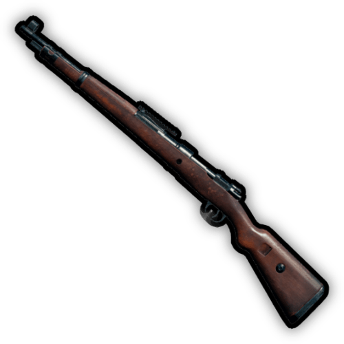

TYEP

AR

SR
SHOTGUN

PISTOL

Grenade

PAN
AR
SR
SHOTGUN
PISTOL
Grenade
PAN

8x8 크기에 다양한 지형을 특징으로 가지고 있는 에란겔에서 넓은 목초지, 높은 산지 그리고 수많은 도시를 탐험해 보세요. 에란겔은 배틀그라운드의 대부 세르게이 칼림닉이 태어난 곳이자 그가 최후의 생존자가 된 곳이며, 첫 번째 공식 배틀그라운드 경기가 개최된 섬이기도 합니다.

지금은 유령 도시처럼 척박한 지형이 늘어진, 황량한 8x8 의 땅인 미라마는 높은 저격 포인트와 드문 식생 덕분에 스나이퍼들의 천국입니다. 한때 드라마 프로듀서였던 헥터 오초아가 미라마에서 악명 높은 죽음의 레이스 '아 라 무에르테 바모스!'를 개최했습니다. 수년 뒤, 그는 카르텔로부터 되찾은 미라마를 배틀그라운드로 만들었습니다.

태이고는 배틀그라운드의 기원이 된 8x8 크기의 맵입니다. 과거 태이고 호산 교도소의 악명 높은 수감자 마강재가 나머지 재소자 전부와 싸웠던 폭동 영상은 불티나게 팔렸습니다. 이 영상은 '굴락 테이프'란 이름을 얻었고, 이후 세르게이가 배틀그라운드를 만들게 된 계기가 되었습니다. 또한, 셀프 부활이 가능한 자가 제세동기와 두 번째 생존 기회를 얻을 수 있는 복귀전 등 태이고만의 독특한 피처들도 만나보세요.

사녹은 4x4 크기의 땅으로 작지만 아이템이 풍부하고 다수의 생존자들이 근거리에 밀집해있기 때문에 빠르고 정신없는 교전을 즐길 수 있습니다. 울창한 열대 정글로 이루어진 사녹에서 그 유명한 '사녹 테이프'가 탄생했습니다. 이후 사녹 4인이라 불리게 된 4명의 전투원들의 탈출 장면을 포착한 테이프죠.
치명적인 허리케인으로 망가진 데스턴은 버려질 수밖에 없었습니다. 남아 있는 것은 거대한 담수화 공장, 무성한 조류 농장, 계속 넓어지는 침수된 도시 지역뿐입니다. 하지만 버려진 도시일지라도 도시가 비어 있진 않습니다. 이제 이 땅은 다른 용도로 사용되고 있습니다…
TikTok